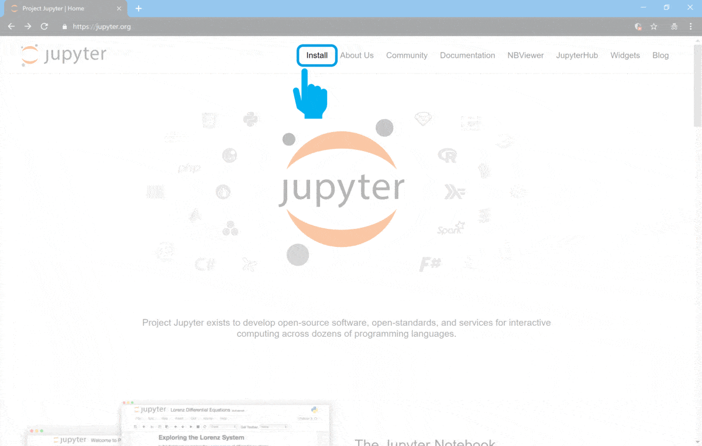

|
|
|
|
|
|
|
|
|
Download, Install and Execute Jupyter Notebook Environment |
| Tags | install☁jupyter☁notebook☁download |
In every journey we always need to prepare our toolbox with the needed resources !
With biosignalsnotebooks happens the same, being Jupyter Notebook environment the most relevant application (that supports biosignalsnotebooks ) to take the maximum advantage during your learning process.
In the following sequence of instruction it will be presented the operations that should be completed in order to have Jupyter Notebook ready to use and to open our _rev.php files on local server.
|
☌
A journey can be done through multiple paths and at this point you can also start programming with diversified resources and in multiple ways. A complete Python toolbox (which includes
Jupyter Notebook
environment) is available for world community and a quick installation guide can be accessed on
"Download, Install and Execute Anaconda"
|
PR -
Jupyter Notebook
environment is able to run code in multiple programming languages, but his primordial format has origin on
IPython Project
 .
.
PR1 - Access to Python main page at https://www.python.org/

PR2 - Click on "Download" tab

PR3 - Select the download link accordingly with your operating system (for the current example we will use Microsoft Windows)

Wait a few moments until the download finishes...
PR4 - Execute the downloaded file (with a double-click in the file icon)

⚠
PR5 - Activate "Add Python *.* to PATH" and click in "Install Now". After this, please, follow the sequential instructions presented in the installer
"Add Python *.* to PATH" option is essential for executing Python in the operating system command line, as will be seen while installing Jupyter Notebook in the next steps

When the installation was complete you finally fulfill the only
Jupyter Notebook
prerequisite.
So, lets advance to the
Jupyter Notebook
installation !!!
1 - Access to the Jupyter Notebook official page at https://jupyter.org/

2 - Go to "Install" tab in order to see detailed installation instructions (with different possibilities)

We will follow the third option
"Install Jupyter with pip"

This option is the most common one when programmers need to install new
Python
packages for use during development tasks.
3 - Open a "Command Prompt"
If you are a Microsoft Windows native, just type click on Windows logo (bottom-left corner of the screen) and type "cmd". Then press "Enter".
4 - Type
"python -m pip install --upgrade pip"
(or
"python3 -m pip install --upgrade pip"
if you had a previously installed version 2 of Python) to update a very practical
Python
tool (
pip
 ) for installing new packages
) for installing new packages

5 - Type "python -m pip install jupyter" (or "python3 -m pip install jupyter" if you had a previously installed version 2 of Python) to install the amazing Jupyter Notebook environment

Our first mission is now completed with the installation of Jupyter Notebook !
⚠
You can skip step 6 if you did not close the previously opened console !
6 - For executing Jupyter Notebook environment you should open a console (in your operating system).
If you are a Microsoft Windows native, just type click on Windows logo (bottom-left corner of the screen) and type "cmd". Then press "Enter".7 - Type "jupyter notebook" inside the opened console. A local Jupyter Notebook server will be launched.

8 - Now, you should navigate through your directories until reaching the folder where you want to create or open a Notebook (as demonstrated in the following video)
⚠
You should note that your folder hierarchy is unique, so, the steps followed in the next image, will depend on your folder organization, being merely illustrative

9 - For creating a new Notebook, "New" button (top-right zone of Jupyter Notebook interface) should be pressed and Python 3 option selected.
A blank Notebook will arise and now you just need to be creative and expand your thoughts to others persons!!!

This can be the start of something great. Now you have all the software conditions to create and develop interactive tutorials, combining Python with HTML !
We hope that you have enjoyed this guide.
biosignalsnotebooks
is an environment in continuous expansion, so don"t stop your journey and learn more with the remaining
Notebooks
 !
!